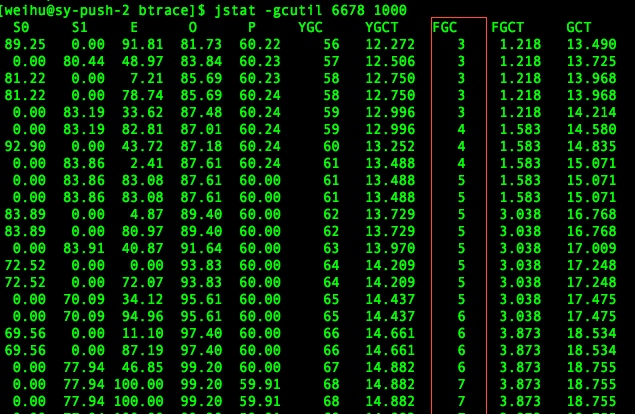
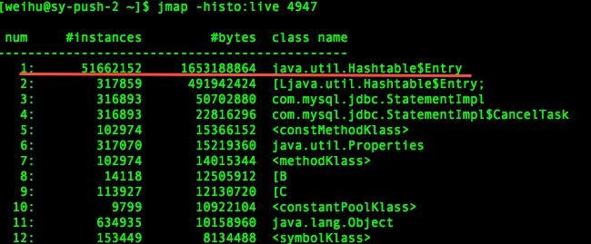
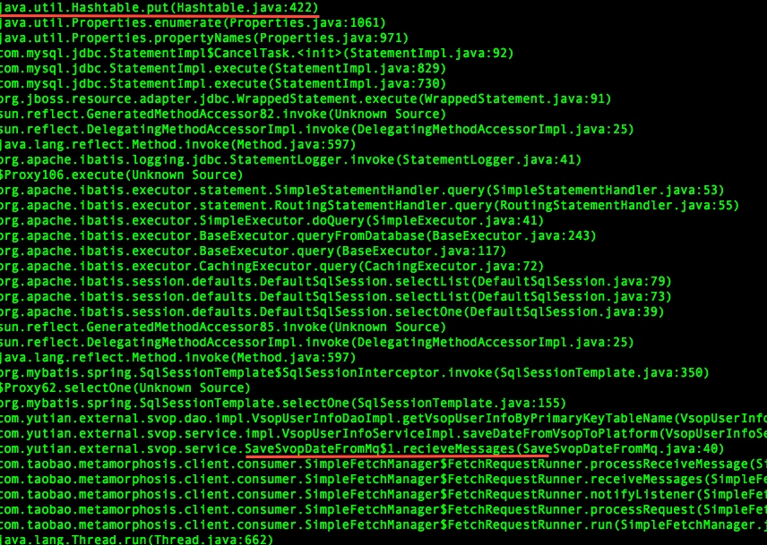

这是个比较典型的java内存使用问题，定位过程也比较直接，但对新人还是有点参考价值的，所以就纪录了一下。
下面介绍一下在不了解系统代码的情况下，如何一步步分析和定位到具体代码的排查过程
（以便新人参考和自己回顾）
业务系统消费MQ中消息速度变慢，积压了200多万条消息，通过jstat观察到业务系统fullgc比较频繁,到最后干脆OOM了：

既然知道了内存使用存在问题，那么就要知道是哪些对象占用了大量内存.
很多人都会想到把堆dump下来再用MAT等工具进行分析，但dump堆要花较长的时间，并且文件巨大，再从服务器上拖回本地导入工具，这个过程太折腾不到万不得已最好别这么干。
可以用更轻量级的在线分析，用jmap查看存活的对象情况（jmap -histo:live [pid]），可以看出HashTable中的元素有5000多万，占用内存大约1.5G的样子：

现在已经知道了是HashTable的问题，那么就要定位出什么代码引起的
接下来自然要看看是什么代码往HashTable里疯狂的put数据，于是用神器btrace跟踪Hashtable.put调用的堆栈。
首先写btrace脚本TracingHashTable.java：
import com.sun.btrace.annotations.*;
import static com.sun.btrace.BTraceUtils.*;
@BTrace
public class TracingHashTable {
/*指明要查看的方法，类*/
@OnMethod(
clazz="java.util.Hashtable",
method="put",
location=@Location(Kind.RETURN))
public static void traceExecute(@Self java.util.Hashtable object){
println("调用堆栈！！");
jstack();
}
}
然后运行：
bin/btrace -cp build 4947 TracingHashTable.java
看到有大量类似下图的调用堆栈

可以看出是在接收到消息后查询入库的代码造成的，业务方法调用ibatis再到mysql jdbc驱动执行statement时put了大量的属性到HashTable中。
通过以上排查已基本定位了由那块代码引起的，接下来就是打开代码工程进行白盒化改造了，对相应代码进行优化（不在本文范围内了。几个图中的pid不一致就别纠结了，有些是系统重启过再截图的）.